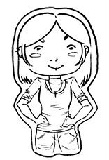
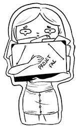
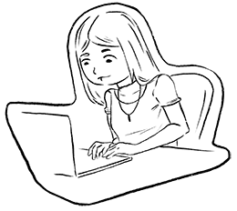
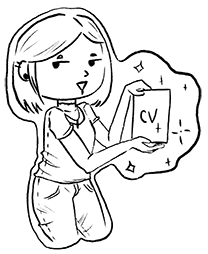
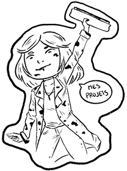
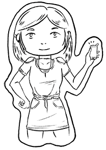

 Je m’appelle Alyssa Goupy, j’ai 22 ans et je suis actuellement en année de césure, ce qui me donne un peu de temps pour créer ce portfolio pour ma future formation dans les Métiers du Multimédia et du Webdesign ! Ce portfolio accueillera mes projets personnels ainsi que mes projets créé en cours durant ma licence d’arts plastiques. Mais parlons d’abord de ce pourquoi je créé ce portfolio !
Pour cela, il faut remonter à une dizaine d’année, au début du collège. La mini-moi découvre le monde fantastique du manga et l’univers incroyable du Japon. Lors d’une journée incroyablement ennuyeuse, je décide de prendre mon premier et seul manga que j’avais à l’époque pour dessiner certaines images qui s’y trouvait à l’intérieur. Le résultat ne fut pas si catastrophique que ça puisque j’ai été encouragé par mes parents et amis à continuer après avoir terminé ce fameux dessin. Alors c’est ce que j’ai fait. Plus je lisais et regardais des mangas, plus je dessinais et je dessinais encore et encore jusqu’à la fin de mes années au collège.
Au lycée je décide de prendre l’option Arts plastiques car, au final, ce n’est pas dessiner que j’aime tant mais créer par tout moyen. Entre temps, je m’inscris à des cours de dessin/créations ludiques le samedi. Je continue à côté de dessiner pour moi, en essayant de ne plus “mangatiser” mes personnages mais plutôt de trouver mon style à moi. Les années lycées avancent, les deux options arts plastiques que j’avais choisies ont des programmes de plus en plus strictes et deviennent de plus en plus “lourdes” (8h d’arts plastiques par semaine minimum). Le Baccalauréat arrive, j’ai deux oraux et un écrit en arts plastiques à passer en plus de toutes les autres matières, c’est dire à quel ces options ont été importantes ! Mais avant d’avoir le bac en poche, il faut choisir les fameuses études à suivre après le lycée. Étant touche-à-tout et surtout, intéressée à tout ce qui concerne le contenu multimédia et la création peu importe sa forme, je formule plus d’une vingtaine de voeux dans ces voies là, toutes plus sélectives les unes que les autres. Cependant, j’avais un petit problème qui concerne beaucoup de jeunes après le bac : je ne savais pas ce que je voulais faire plus tard. Alors j’avais beau formuler des voeux et être intéressée dans ces domaines, je n’avais pas la motivation pour vraiment entrer dans ces formations et cela se ressentait dans mes lettres de motivations. Finalement, j’ai été accepté à l’université de Bordeaux Montaigne afin suivre la Licence d’Arts Plastiques.

Je n’ai jamais regretté d’avoir été à l’université pour les arts plastiques, elle m’a apporté beaucoup de choses. Les cours qui m’ont le plus marqué sont certainement ceux de sérigraphie et de gravure, des techniques de dessins remarquables ainsi que les cours d’infographie ! Mais les années passent, j’arrive en troisième année de licence et j’ai toujours ce même problème : je ne sais pas quoi faire plus tard. C’est un vide qui me pèsera de plus en plus et je ne souhaite pas compter sur le hasard pour choisir une nouvelle formation, il faut que je la choisisse moi-même en étant sûre que ce sera LA formation qui me mènera à ma future vie professionnelle.
Je décide alors, après l’obtention de ma licence, de prendre une année de césure durant laquelle je travaille à temps complet en tant qu’hôtesse de caisse.Les mois passent, je suis à la recherche d’une formation qui saura combler ma vie professionnelle et, parmis toutes les propositions que je me fais, une seule me paraît vraiment attractive, le domaine du multimédia. J’avais une vague idée de ce que ça pourrait être grâce aux cours d’infographie à la fac, j’ai parlé à des amis ayant fait leurs études dans l’informatique, je commence à voir un peu mieux la route qui se fait devant moi. Alors je cherche parmis les formations qui existent déjà dans ma ville où j’ai fait mes études. Une seule me semble la plus appropriés, la formation MMI (Métier du Multimédia et de l’Internet) qui permet d’acquérir un DUT soit un Bac+2. Les portes ouvertes ont eu lieu très vite après, je ne suis que plus motivée après avoir discuté avec des étudiants et des professeurs, ni une ni deux, en rentrant je me jette sur mon PC pour créer mon portfolio en ligne afin de le soumettre lors de ma candidature. Aujourd’hui, vous avez l’occasion de le visiter, j’espère qu’il vous plaira !
Bienvenue ! Mon Portfolio est actuellement en travaux, merci de votre patience :)
A propos de moi
Mon CV

Formation
Licence Arts Plastiques, 2019Université Bordeaux Montaine
Baccalauréat général Littéraire, spécialité Arts Plastiques, 2016
Lycée Marguerite de Valois, Angoulême
Expériences Professionnelles
Tenue de caisse, Août 2019 - En coursTenue du standars téléphonique, conseil client, encaissement,
mise en rayon
CDD Temps Plein
Garde d'enfant, janvier-juillet 2019
Tenue de caisse, septembre-octobre 2018
CDD 10h, Contrat Etudiant
Employée polyvalente, juillet-août 2018
Mise en rayon, tenue de caisse
CDD Temps Plein
Vendeuse polyvalente, février-juin 2018
Encaissement, rangement et mise en rayon de vêtements/chaussures
CDD 8h, Contrat Etudiant
Mise en Rayon, juillet 2017
CDD 30h
Compétences
Langues :- Français (Natif)
- Anglais (Niveau B2)
- Photoshop
- Illustrator
- InDesign
- Premiere Pro
- After Effect
- 3DS Max
- Procreate
- Dessin Traditionnel
- Dessin Numérique
- Création 3D
- Sérigraphie
- Gravure
- Broderie
Centres d'Intérêt
Plus de 10 ans de pratique en dessin - Linogravure - Gravure à l'eau forte - Sérigraphie - Broderie - Lecture - Jeux Vidéos - Création de Bijoux - Produits fait MainMon Portfolio



Me contacter

alyssagoupy97@gmail.com